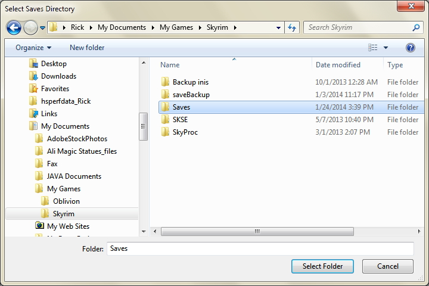

| Skyrim Savegame Watcher Help Page |
Overview
This program watches the directory where Skyrim saves your savegame files. It offers two separate functions when you do a savegame while playing the game
- Savegame Savior - The game only allows you to have one quicksave, and it overwrites this file each time you do a quicksave. If you find yourself in a situation where you want to reload from a previous save, your only option is to restart from the last quicksave made, or go back to the last autosave to full save. This can be a major problem if you have explored for a while or have autosaves turned OFF and don't have a recent fullsave and find you need to reload from a save-point before your last quicksave (like doing a quicksave right before you get killed).
- Skyrim Potion Maker For Android - This is required if you want to use my Android app Skyrim Potion Maker. When enabled, it will extract the latest alchemy information from the savegame and prepare it for sending to your Android device.
- PC Sync XML - This is for exporting and importing XML files with the Android app Skyrim Potion Maker. When enabled, you can use the Android App's Export and Import functions.
Using The Program
Setting the Location of the Savegame Directory The first time you start this program, you need to click the Directory button and tell the program where your Save directory is.
By default, Skyrim puts this directory at: C:\Users\YourWindowsAccountName\Documents\My Games\Skyrim\Saves\
For example, on my computer this is: C:\Users\Rick\Documents\My Games\Skyrim\Saves\
Navigate to the Skyrim folder, select the Saves directory, and click the Select Folder button as shown below:

Once selected, you will see the full path of this directory to the right of the Directory button.
Starting the Savegame Watcher Click the Start button to start the watcher. The button text will change to Stop, and the window will be minimized to the task bar.
Before or after staring the program, you can turn ON or OFF the Savegame Savior and/or Skyrim Potion Maker functions. Obviously,
if both of those are off, the program won't actually do anything.
You can choose to have the program automatically start on start-up, by checking this box.
The
/Resources DirectoryAll of the text strings used in the dialog are in: /Resources/Skyrim_Language_USEnglish.xml
Filenames and extensions
At the top of this file are the strings used for the filenames and extensions of the Skyrim game.
key (DO NOT CHANGE!) value Description quicksave_filename quicksave The default filename of the quicksave file filename_extension_ess ess The default extension of all savegame files filename_extension_skse skse The extension of the skse file saved with each savegame fullsave_filename_prefix Save The first 4 characters of a fullsave savior_filename_prefix gamesave_ The filename used by Savegame Savior Only modify the first 4 values if your game uses different names. You can change the gamesave_ prefix to anything you want.
Text used by the program
The rest of the file has the text strings used in the program. To create another language file, you can just edit that file. If you would like to create a language file and share it with me, so that I can include it with the program.
To create a language file that can be shared:
- Copy the current file and give it a name using your language, like: Skyrim_Language_French.xml
- Only change the value="string" part of each line. The key="string" is used by the program to lookup the string to use. DON'T MODIFY THE KEY!
- Modify the first line in the SkyrimSaves_SaveData.txt file to: LANGUAGE_XML_FILE:Skyrim_Language_French.xml
- Contact me:
- GamerRick on Skyrim Nexus
- GamerRick on the Bethesda Skyrim forum.
- Email me at: spm_rickf@sbcglobal.net
User Preferences
All of your entries and options are saved in: /Resources/SkyrimSaves_SaveData.txt
It gets created the first time you run the program. You should only modify the first line, if you want to use another language file. You can delete the file to have the program regenerate it.
The Help Files
The help files are just plain HTML files. The program only opens the main screen (this screen - MainHelpFile.html) in your browser. If you want to translate these files, rewrite them, or change anything (like my color scheme ;) ), feel free to do so. If you want to be able to open this screen when clicking the help button, don't change this file's filename.
Credit
Thanks to Bethesda forum member trira!! He provided the Java code to parse the Skyrim savegame file to extract the Alchemy information!
Links: